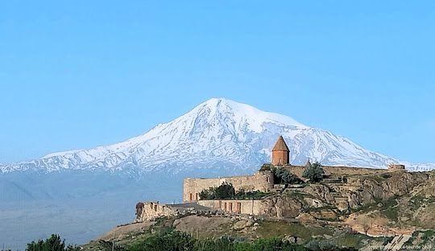
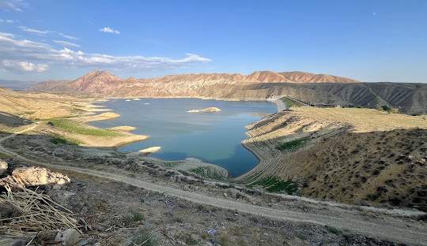
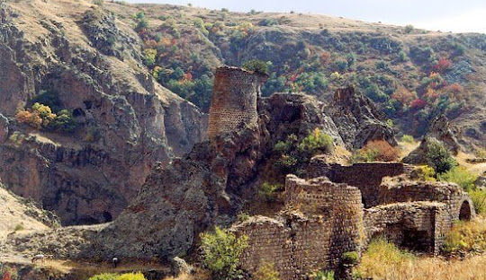

Արարատ
Տարածքը 2096 կմ² է։Արարատի մարզը գտնվում է Հայաստանի հարավ-արևմուտքում։ Հյուսիս-արևմուտքից սահմանակից է Արմավիրի մարզին, հյուսիսից՝ Երևանին ու Կոտայքի մարզին, արևելքից Գեղարքունիքի և Վայոց ձորի մարզերին, հարավից՝ Ադրբեջանի մասը կազմող Նախիջևանին, իսկ հարավ-արևմուտքից Թուրքիային։
Բնական պայմաններ
Արարատի մարզի հարավարևմտյան եզրին զուգահեռ 6-13 կմ լայնությամբ ընկած է Արարատյան հարթավայրի հարավարևելյան մասը։ Հյուսիսում Երանոսի լեռնաշղթան է։ Հյուսիսային սահմանն անցնում է Ազատ և դրա վտակ Գողթ գետերով։ Հյուսիս-արևելքում Գեղամա լեռնաշղթայի հարավարևմտյան հատվածն է։ Արևելքում Մժկատարի լեռներն են, որից արևմուտք ընկած է Դահնակի լեռնաշղթան, սրանից էլ հարավ գտնվում է Ուրծի լեռնաշղթան։ Մարզի կենտրոնում Երասխի լեռներն են, Կոտուց, Խոսրովասար լեռնագագաթները և այլ լեռնազանգվածներ։
Տնտեսություն
Արարատի մարզը տնտեսապես Հայաստանի ամենազարգացած մարզերից է, հատկապես կարևոր է մարզի գյուղատնտեսական նշանակությունը։ Ունենալով Արարատյան դաշտի մի մեծ հատված՝ մարզը տալիս է Հայաստանի գյուղատնտեսական արտադրանքի զգալի մասը։ Առավել զարգացած է երկրագործությունը։ Հիմնական պտղատու այգիներն են խաղողի, ծիրանի, դեղձի այգիները, մշակվում են նաև կեռաս, սալոր, խնձոր, տանձ և այլն։ Մարզի հիմնական մշակաբույսերն են ձմերուկ, սեխ, լոլիկ, վարունգ, լոբի, սիսեռ, կանաչ պղպեղ, սմբուկ, ցորեն։ Երկրագործությունը 90 տոկոսով ոռոգովի է։ Այդ նպատակով օգտագործվում է ինչպես գետերի ջրերը՝ իրենց ջրանցքներով, այնպես էլ արտեզյան հորերի ջրերը։ Լեռնային հատվածներում զարգացած է նաև անասնապահությունը՝ հիմնականում ոչխարաբուծություն, ավելի քիչ՝ խոշոր եղջերավոր անասնապահություն։ Արարատի մարզի արդյունաբերությունում, կարևոր տեղ ունի լեռնահանքային արդյունաբերությունը։ Արարատ քաղաքի մոտ արդյունահանվում է տրավերտին, կրաքար, ավազ, մարզի այլ հատվածներում նույնպես կան տրավերտինի, ավազի, մարմարի, բազալտի հանքեր։ Կան հանքային ջրեր՝ Արարատ և Վեդի։ Մետաղական հանածոների արդյունաբերական պաշարներ չկան։ Շատ մեծ է սննդի արդյունաբերության նշանակությունը։ Գոյություն ունեն մի շարք գործարաններ, որոնք զբաղվում են մարզում արտադրված գյուղմթերքի վերամշակմամբ՝ մուրաբաների, բնական հյութերի, պահածոների, տոմատի մածուկների արտադրությամբ։
  